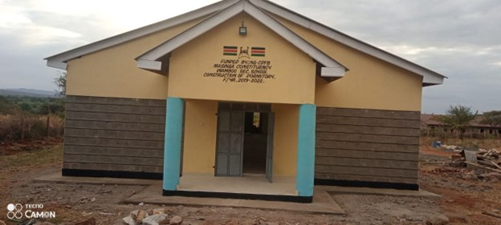

Support Local Development - Partner with Masinga NG-CDF
News & Updates
Stay informed about the latest developments in Masinga Constituency
Featured News

Education
New Dormitory Complex Completed at Wamboo Secondary
November 10, 2025
The newly constructed dormitory at Wamboo Secondary School can now accommodate 200 additional students, improving learning conditions and supporting COVID-19 protocols.
Massive Bursary Cheques Issued at Musingi Secondary
November 15, 2025
Hon. Joshua Mbithi Mwalyo personally oversaw the distribution of KSh 8.5 million in bursary cheques to support over 500 students across Masinga Constituency.
Bursary Cheques Issuance at Musingi Secondary School
November 15, 2025
CDF Admin
Hon. Joshua Mbithi Mwalyo, Area Member of Parliament, personally issued bursary cheques to deserving students at Musingi Secondary School, supporting over 500 students across the constituency...
Area MP Hon. Joshua Mbithi Mwalyo presided over the bursary issuance ceremony at Musingi Secondary School, distributing cheques totaling KSh 62 million to support secondary and tertiary education...
The CEO of NG-CDF Board led a best practice demonstration program in Kimuuni, accompanied by Area MP Hon. Joshua Mbithi Mwalyo, committee members, and key stakeholders...
Bursary Cheques Issuance at Musingi Secondary School
November 15, 2025 |
CDF Admin |
5 min read
In a significant boost to education in Masinga Constituency, Hon. Joshua Mbithi Mwalyo, Area Member of Parliament, personally presided over the issuance of bursary cheques at Musingi Secondary School. The event marked a major milestone in the constituency's educational support program.
Financial Impact
A total of KSh 62 million was distributed to support over 500 students across Masinga Constituency. The bursary program specifically targets:
Orphaned and vulnerable students
Bright students from economically challenged backgrounds
Students pursuing STEM courses at university level
Girl child education initiatives
Program Reach
The bursary program covers both secondary and tertiary education, ensuring that financial constraints do not hinder academic excellence. Beneficiaries were selected through a transparent process involving school principals, local administrators, and the NG-CDF committee.
Community Response
Parents and guardians expressed gratitude for the support, noting that the bursaries would alleviate the financial burden of school fees and educational materials. School principals reported increased enrollment and reduced dropout rates since the program's inception.
Hon. Joshua Mbithi Mwalyo interacting with students during the bursary issuance ceremony
Future Plans
The NG-CDF committee plans to expand the bursary program to include vocational training institutions and increase the allocation for university students. Regular monitoring and evaluation will ensure the funds are utilized effectively for educational purposes.
Best Practice Demonstration Program in Kimuuni
November 14, 2025 |
CDF Admin |
4 min read
Kimuuni played host to a landmark best practice demonstration program led by the CEO of NG-CDF Board, showcasing Masinga Constituency's exemplary project implementation strategies.
Key Attendees
The event brought together key stakeholders including:
CEO of NG-CDF Board
Area MP Hon. Joshua Mbithi Mwalyo
NG-CDF Committee Members
Local administrators
Project implementation team
Community representatives
Workshop Focus Areas
The capacity-building workshop emphasized:
Project Management Excellence: Streamlined processes for efficient project execution
Financial Accountability: Transparent fund utilization and reporting mechanisms
Community Engagement: Involving locals in project planning and monitoring
Masinga's successful projects were highlighted as national benchmarks for effective CDF implementation. The CEO commended the constituency for its innovative approaches to community development and sustainable project management.
Outcomes and Commitments
Participants committed to adopting the best practices demonstrated, with plans for regular follow-up sessions. The program also established a framework for peer learning among constituencies.
"Masinga Constituency has set a remarkable example in CDF implementation that other constituencies should emulate. Their community-centered approach and financial transparency are commendable."
- CEO, NG-CDF Board